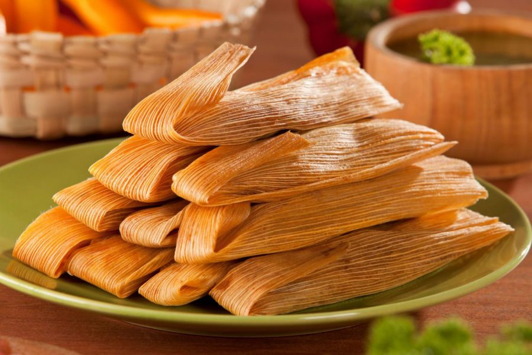

Tamales Recipe

Tamales is a special Mexican food that is filled with pig meat
Tamales is one of the most special Mexican foods. Reason being is that in any special event tamales are there.
Thanksgiving,Christmas,Birthday party, and many more events. It has become a staple food for Mexican events.
It is a very good dish, but there is a lot of steps to make it and also is very complicated to get it right. It is well worth it!
Ingredients
- ½ onion
- 4 cloves garlic, minced
- 2 bay leaves
- salt to taste
- water to cover
- corn husks
- 1 pound Roma tomatoes
- 4 dried chile de arbol peppers
- 4 small guajillo chile peppers, stemmed and seeded
- 1 tablespoon cornstarch
- 1 ¼ cups lard
- 4 ½ cups fresh corn masa dough
- 1 tablespoon salt
- 1 tablespoon baking powder
Directions
- Cut pork into 3 chunks and place in a large saucepan. Add onion, garlic, bay leaves, and salt and cover with water.
Bring to a boil; skim foam from surface. Reduce heat, cover, and simmer for 1 hour. Remove pork and let cool.
Strain broth and reserve.
- Bring a pot of water to a boil while pork is cooking. Add tomatoes, arbol chiles, and guajillo chiles, and boil until chiles are soft,
about 5 minutes. Remove with a slotted spoon, reserving cooking water, and allow to cool.
- Place corn husks in a bowl, cover with boiling water, and soak for 30 to 60 minutes.
Drain, place on a work surface, and cover with a clean, damp towel.
- Combine tomatoes, 1/2 cup cooking water, chiles de arbol, guajillo chiles, and cornstarch in a blender; blend until smooth.
Strain tomato sauce through a fine-mesh sieve.
- Beat lard with an electric mixer in a large bowl until fluffy. Combine masa, 1 cup reserved pork broth, 1 tablespoon salt,
and baking powder in a separate bowl and mix until smooth. Add masa mixture to lard and mix until it has a smooth cookie dough consistency.
Test if the masa is ready by dropping a small ball of masa into a glass of cold water; if it floats, it's ready, if not,
keep beating for a little longer.
- Shred cooled pork with 2 forks.
- Select 1 wide corn husk or 2 small ones. Spread about 2 tablespoons masa mixture onto the the corn husk, filling it up to 2 inches from the bottom
and 1/4 inch from the top. Add 1 tablespoon of the tomato sauce and pork down the center of the masa mixture.
Fold sides of husk together, 1 over the other. Fold the bottom of the husk over the seam of the 2 folded sides. Repeat with remaining husks.
- Place a steamer insert into a saucepan and fill with water to just below the bottom of the steamer. Bring water to a boil.
Add tamales with the open side up and cook until filling is heated through and separates from the husk, about 1 hour.
Let tamales rest for 15 minutes before serving.